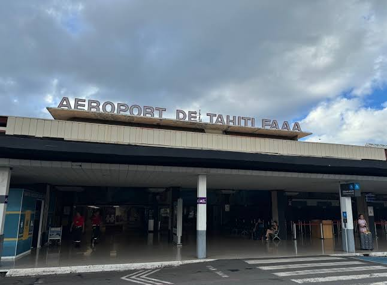
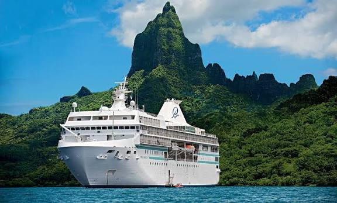
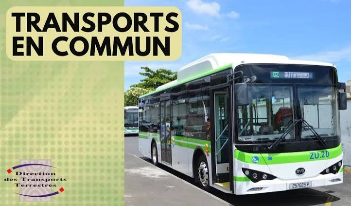
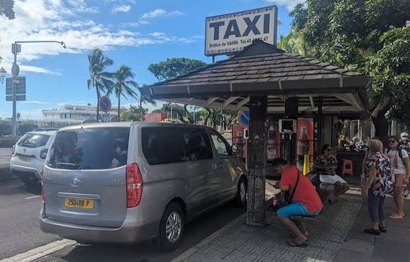
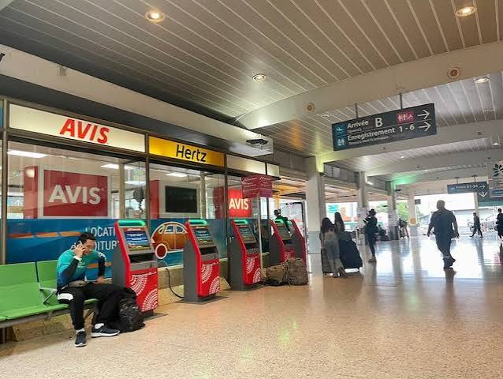

Most visitors arrive through Taniti's regional airport, which currently accommodates small jets and propeller aircraft. Airport expansion is underway to support larger commercial jets.

A small cruise ship docks at Yellow Leaf Bay once each week, allowing visitors to experience Taniti during a one-day stop.

Public buses operate daily within Taniti City from 5:00 a.m. to 11:00 p.m.. Private bus services are available throughout the rest of the island.

Taxi services are readily available throughout Taniti City and provide convenient transportation to hotels, beaches, restaurants, and local attractions.

Rental vehicles are available near the airport for visitors wishing to explore the island at their own pace.
Several local vendors offer bicycle rentals. Helmets are required by law and are included with every rental.
Taniti City is flat, pedestrian-friendly, and ideal for walking. Many visitors also enjoy exploring Merriton Landing on foot, where restaurants, entertainment, and shopping are all within walking distance.
| Transportation | Best For | Availability |
|---|---|---|
| Public Bus | City Travel | 5 AM – 11 PM Daily |
| Taxi | Quick Transportation | Available Daily |
| Rental Car | Island Exploration | Near Airport |
| Bicycle | Local Sightseeing | Multiple Rental Shops |
| Walking | Downtown & Merriton Landing | Anytime |
Walking or renting a bicycle is one of the best ways to experience Taniti City's shops, restaurants, beaches, and beautiful scenery. Rental cars are recommended for exploring the volcano, rainforest, and other attractions outside the city.